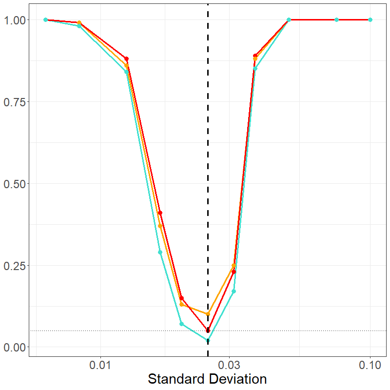

This vignette shows the power curve for the model. This curves are
based on data similar to that in the triple negative breast cancer data,
for which there is another vignette vignette("TNBC"). To
this end, we consider two cases: (1) a few number of interactions and
(2) a large number of interactions.
In both cases, we consider the \(c1\_c2\) interaction of varying strength and trend between two outcomes. In the null case, there is some clustering of \(c2\) around \(c1\) in both cases (the placing normal distribution using a standard deviation of 1/40). There are 5 cases on either side of this value, i.e. increased clustering or repulsion. Additional variables are generated: an additional \(2\) cells in small and \(14\) cells in the large cases are added, and meta-variable age is included.
nSims <- 100
changes <- 1/40 * c(4,3,2,1.5,1.25,
1,
1/1.25,1/1.5,1/2,1/3,1/4)
baseline <- changes[6]For the small number of interactions scenario, we consider \(4\) cells and interactions between them.
cells <- paste0('c',1:4)
cells_interactions <- rbind(data.frame(t(combn(cells,2))),
data.frame('X1'=cells,'X2'=cells))Next the data is generated, \(100\) data sets for each scenario (as given below).
info <- rfdata <- list()
for(c in 1:length(changes)){
cat(paste0('\n- Change: ',changes[c],'\n-- (',nSims,'): '))
set.seed(c*123)
for(i in 1:nSims){
cat(paste0(i,', '))
# Generate
dat <- simulatePP(cellVarData=
data.frame('stage'=c(0,1),
'c1'=c(0,0),
'c2'=c(baseline,changes[c])^2,
'c3'=c(1/50,1/50),
'c4'=c(1/10,1/10)),
cellKappaData=data.frame(
'cell'=paste0('c',1:4),
'clusterCell'=c(NA,'c1','c1', NA),
'kappa'=c(30,
5,5,
30)),
peoplePerStage=17,
imagesPerPerson=1,
silent=T)
pcaData <- getKsPCAData(data = dat,repeatedUniqueId='Image',
xRange = c(0,1), yRange = c(0,1),
agents_df = cells_interactions,
silent=TRUE)
pcaMeta <- simulateMeta(pcaData,
metaInfo = data.frame(
'var'=c('age'),
'rdist'=c('rnorm'),
'Stage_0'=c('25'),
'Stage_1'=c('25')))
info[[i]] <- list(dat,pcaData,pcaMeta)
rfdata[[i]] <- pcaMeta
}
## Save RDS
saveRDS(info, paste0(path,'change_sim_small_info',c,'.rds'))
saveRDS(rfdata, paste0(path,'change_sim_small_rfdata',c,'.rds'))
}After generation, the model is fit on all of these data sets.
for(c in 1:length(changes)){
cat(paste0('\n- Change: ',changes[c],'\n-- (',nSims,'): '))
rfdat <- readRDS(paste0(path,'change_sim_small_rfdata',c,'.rds'))
VarVI_both <- VarVI_noi <- VarVI_int <-
VarVI_maxint <- VarVI_bothmax <-
data.frame('var'=c('age',
paste(cells_interactions$X1,
cells_interactions$X2,sep='_')))
set.seed(c*12345)
for(i in 1:nSims){
cat(paste0(i,', '))
# Generate
rfcv <- funkyModel(data=rfdat[[i]],
outcome = 'Stage', unit = 'Person',
metaNames=c('age'), silent = TRUE)
# Org Data
tmp <- rfcv$VariableImportance[,c('var','est','sd')]
tmp <- tmp[order(-tmp$est),]
rownames(tmp)<-NULL
tmp$CutoffNoise <- rfcv$NoiseCutoff
tmp$CutoffInterp <- rfcv$InterpolationCutoff
tmp$CutoffMaxInterp <- max(rfcv$InterpolationCutoff)
# Above Lines
tmp$TF_intCO <- (tmp$est > tmp$CutoffInterp)
tmp$TF_noiCO <- (tmp$est > tmp$CutoffNoise)
tmp[[paste0('iter',i)]] <- tmp$TF_intCO * tmp$TF_noiCO
VarVI_both <- merge(VarVI_both,tmp[,c('var',paste0('iter',i))])
tmp[[paste0('iter',i)]] <- tmp$TF_noiCO
VarVI_noi <- merge(VarVI_noi,tmp[,c('var',paste0('iter',i))])
tmp[[paste0('iter',i)]] <- tmp$TF_intCO
VarVI_int <- merge(VarVI_int,tmp[,c('var',paste0('iter',i))])
tmp$TF_maxIntCO <- (tmp$est > tmp$CutoffMaxInterp)
tmp[[paste0('iter',i)]] <- tmp$TF_maxIntCO * tmp$TF_noiCO
VarVI_bothmax <- merge(VarVI_bothmax,tmp[,c('var',paste0('iter',i))])
tmp[[paste0('iter',i)]] <- tmp$TF_maxIntCO
VarVI_maxint <- merge(VarVI_maxint,tmp[,c('var',paste0('iter',i))])
}
## Save RDS
results[[paste0('Change_',changes[c])]] <-
list('dat'=tmp, 'fullDat'=list(rfcv$VariableImportance,
rfcv$NoiseCutoff,
rfcv$InterpolationCutoff),
'VarVI_both'=VarVI_both,
'VarVI_noi'=VarVI_noi,
'VarVI_int'=VarVI_int,
'VarVI_bothmax'=VarVI_bothmax,
'VarVI_maxint'=VarVI_maxint)
## Save RDS
saveRDS(results, paste0(path,'change_sim_small_',c,'.rds'))
}The data is then summarized together:
data <- list()
for(i in 1:11){
data <- append(data,
readRDS(paste0(path,'change_sim_small_',i,'.rds')))
}
data_summary <- data.frame('var'=changes, 'noi'=NA, 'int'=NA,
'both'=NA, 'max'=NA, 'bothmax'=NA)
for(i in 1:length(data)){
data_summary[i,'noi'] <-
sum(data[[i]]$VarVI_noi[data[[i]]$VarVI_noi$var=='c1_c2',-1]) /
length(data[[i]]$VarVI_noi[data[[i]]$VarVI_noi$var=='c1_c2',-1])
data_summary[i,'int'] <-
sum(data[[i]]$VarVI_int[data[[i]]$VarVI_int$var=='c1_c2',-1]) /
length(data[[i]]$VarVI_int[data[[i]]$VarVI_int$var=='c1_c2',-1])
data_summary[i,'max'] <-
sum(data[[i]]$VarVI_max[data[[i]]$VarVI_max$var=='c1_c2',-1]) /
length(data[[i]]$VarVI_max[data[[i]]$VarVI_max$var=='c1_c2',-1])
data_summary[i,'both'] <-
sum(data[[i]]$VarVI_both[data[[i]]$VarVI_both$var=='c1_c2',-1]) /
length(data[[i]]$VarVI_both[data[[i]]$VarVI_both$var=='c1_c2',-1])
# (max either)
data_summary[i,'bothmax'] <-
sum(data[[i]]$VarVI_bothmax[data[[i]]$VarVI_bothmax$var=='c1_c2',-1]) /
length(data[[i]]$VarVI_bothmax[data[[i]]$VarVI_bothmax$var=='c1_c2',-1])
}
data_plot <- tidyr::pivot_longer(data_summary,cols=noi:bothmax)And a power curve is built:
plot_sm <-
ggplot2::ggplot(
data_plot[data_plot$name %in% c('noi','int','both'),],
ggplot2::aes(x=var, y=value, color=name, group=name)) +
ggplot2::geom_line(linewidth=1.25) +
ggplot2::geom_point(size=3) +
ggplot2::geom_vline(
ggplot2::aes(xintercept=baseline),
color='black', linetype='dashed', linewidth=1.25) +
ggplot2::geom_hline(
ggplot2::aes(yintercept=0.05), linetype='dotted') +
ggplot2::theme_bw() +
ggplot2::theme(axis.text=ggplot2::element_text(size=18),
axis.title = ggplot2::element_text(size=22),
legend.position = "none",
legend.title = ggplot2::element_text(size=22),
legend.text = ggplot2::element_text(size=18)) +
ggplot2::xlab('Standard Deviation') +
ggplot2::ylab(NULL) +
ggplot2::scale_x_log10()
plot_sm
knitr::include_graphics("img/change_sm_curve_show.png")
The large model is created in much the same manner, only using \(16\) total cells and their interactions.
cells <- paste0('c',1:16)
cells_interactions <- rbind(data.frame(t(combn(cells,2))),
data.frame('X1'=cells,'X2'=cells))Followed by data generation for \(100\) trials per scenario:
info <- rfdata <- list()
for(c in 1:length(changes)){
cat(paste0('\n- Change: ',changes[c],'\n-- (',nSims,'): '))
set.seed(c*1234)
for(i in 1:nSims){
cat(paste0(i,', '))
# Generate
dat <- simulatePP(
cellVarData=
data.frame('stage'=c(0,1),
'c1'=c(0,0),
'c2'=c(baseline,changes[c])^2, 'c3'=c(1/50,1/50),
'c4'=c(0,0), 'c5'=c(0,0), 'c6'=c(0,0),
'c7'=c(0,0), 'c8'=c(0,0), 'c9'=c(0,0),
'c10'=c(0,0), 'c11'=c(0,0), 'c12'=c(1/30,1/30)^2,
'c13'=c(0,0), 'c14'=c(1/50,1/50)^2,
'c15'=c(1/100,1/100)^2, 'c16'=c(1/10,1/10)),
cellKappaData=data.frame(
'cell'=paste0('c',1:16),
'clusterCell'=c(NA,'c1','c1', rep(NA,10),rep('c1',3)),
'kappa'=c(30,5,5,rep(30,10), rep(5,3))),
peoplePerStage=17,
imagesPerPerson=1,
silent=T)
pcaData <- getKsPCAData(data = dat,repeatedUniqueId='Image',
xRange = c(0,1), yRange = c(0,1),
agents_df = cells_interactions,
silent=TRUE)
pcaMeta <- simulateMeta(pcaData,
metaInfo = data.frame(
'var'=c('age'),
'rdist'=c('rnorm'),
'Stage_0'=c('25'),
'Stage_1'=c('25')))
info[[i]] <- list(dat,pcaData,pcaMeta)
rfdata[[i]] <- pcaMeta
}
## Save RDS
saveRDS(info, paste0(path,'change_sim_large_info',c,'.rds'))
saveRDS(rfdata, paste0(path,'change_sim_large_rfdata',c,'.rds'))
}Then model fitting:
loop <- 1:nSims # Often in sets of 10,
for(c in 1:length(changes)){
cat(paste0('\n- Change: ',changes[c],'\n-- (',nSims,'): '))
rfdat <- readRDS(paste0(path,'change_sim_large_rfdata',c,'.rds'))
VarVI_both <- VarVI_noi <- VarVI_int <-
VarVI_maxint <- VarVI_bothmax <-
data.frame('var'=c('age',
paste(cells_interactions$X1,
cells_interactions$X2,sep='_')))
for(i in loop){
cat(paste0(i-min(loop)+1,', '))
# Generate
# Move into loop so this loop can be split to allow additional computation
set.seed(c*12345+i)
rfcv <- funkyModel(data=rfdat[[i]],
outcome = 'Stage', unit = 'Person',
metaNames=c('age'), silent = TRUE)
# Org Data
tmp <- rfcv$VariableImportance[,c('var','est','sd')]
tmp <- tmp[order(-tmp$est),]
rownames(tmp)<-NULL
tmp$CutoffNoise <- rfcv$NoiseCutoff
tmp$CutoffInterp <- rfcv$InterpolationCutoff
tmp$CutoffMaxInterp <- max(rfcv$InterpolationCutoff)
# Above Lines
tmp$TF_intCO <- (tmp$est > tmp$CutoffInterp)
tmp$TF_noiCO <- (tmp$est > tmp$CutoffNoise)
tmp[[paste0('iter',i)]] <- tmp$TF_intCO * tmp$TF_noiCO
VarVI_both <- merge(VarVI_both,tmp[,c('var',paste0('iter',i))])
tmp[[paste0('iter',i)]] <- tmp$TF_noiCO
VarVI_noi <- merge(VarVI_noi,tmp[,c('var',paste0('iter',i))])
tmp[[paste0('iter',i)]] <- tmp$TF_intCO
VarVI_int <- merge(VarVI_int,tmp[,c('var',paste0('iter',i))])
tmp$TF_maxIntCO <- (tmp$est > tmp$CutoffMaxInterp)
tmp[[paste0('iter',i)]] <- tmp$TF_maxIntCO * tmp$TF_noiCO
VarVI_bothmax <- merge(VarVI_bothmax,tmp[,c('var',paste0('iter',i))])
tmp[[paste0('iter',i)]] <- tmp$TF_maxIntCO
VarVI_maxint <- merge(VarVI_maxint,tmp[,c('var',paste0('iter',i))])
}
## Save RDS
results[[paste0('Change_',changes[c])]] <-
list('dat'=tmp, 'fullDat'=list(rfcv$VariableImportance,
rfcv$NoiseCutoff,
rfcv$InterpolationCutoff),
'VarVI_both'=VarVI_both,
'VarVI_noi'=VarVI_noi,
'VarVI_int'=VarVI_int,
'VarVI_bothmax'=VarVI_bothmax,
'VarVI_maxint'=VarVI_maxint)
## Save RDS
# Min/Max loop due to our running of splitting the inner loop to
# run multiple instances at once.
saveRDS(results, paste0(path,'change_sim_large_',c,'_',
min(loop),max(loop),'_','.rds'))
}And data summarizing:
data <- list()
# Breaks come
breaks <- c("1100") # This will change based on previous loop and saving
for(i in 1:11){
tmpData <- list()
for(j in 1:length(breaks)){
iterData <- readRDS(
paste0(path,'change_sim_large_',
i,'_',breaks[j],'_','.rds'))
# Next part may be needed depending on break scheme to recombine
if(j==1){
tmpData[[names(iterData)]] <-
list(dat=iterData[[1]]$dat[,-9],
VarVI_both=iterData[[1]]$VarVI_both,
VarVI_noi=iterData[[1]]$VarVI_noi,
VarVI_int=iterData[[1]]$VarVI_int,
VarVI_bothmax=iterData[[1]]$VarVI_bothmax,
VarVI_maxint=iterData[[1]]$VarVI_maxint,
VarVI_both=iterData[[1]]$VarVI_both)
}else{
tmpData[[names(iterData)]] <-
list(dat=rbind(tmpData[[1]]$dat,
iterData[[1]]$dat[,-9]),
VarVI_both=merge(tmpData[[1]]$VarVI_both,
iterData[[1]]$VarVI_both),
VarVI_noi=merge(tmpData[[1]]$VarVI_noi,
iterData[[1]]$VarVI_noi),
VarVI_int=merge(tmpData[[1]]$VarVI_int,
iterData[[1]]$VarVI_int),
VarVI_bothmax=merge(tmpData[[1]]$VarVI_bothmax,
iterData[[1]]$VarVI_bothmax),
VarVI_maxint=merge(tmpData[[1]]$VarVI_maxint,
iterData[[1]]$VarVI_maxint),
VarVI_both=merge(tmpData[[1]]$VarVI_both,
iterData[[1]]$VarVI_both) )
}
}
data <- append(data, tmpData)
}
data_summary <- data.frame('var'=changes, 'noi'=NA, 'int'=NA,
'both'=NA, 'max'=NA, 'bothmax'=NA)
for(i in 1:length(data)){
data_summary[i,'noi'] <-
sum(data[[i]]$VarVI_noi[data[[i]]$VarVI_noi$var=='c1_c2',-1]) /
length(data[[i]]$VarVI_noi[data[[i]]$VarVI_noi$var=='c1_c2',-1])
data_summary[i,'int'] <-
sum(data[[i]]$VarVI_int[data[[i]]$VarVI_int$var=='c1_c2',-1]) /
length(data[[i]]$VarVI_int[data[[i]]$VarVI_int$var=='c1_c2',-1])
data_summary[i,'max'] <-
sum(data[[i]]$VarVI_max[data[[i]]$VarVI_max$var=='c1_c2',-1]) /
length(data[[i]]$VarVI_max[data[[i]]$VarVI_max$var=='c1_c2',-1])
data_summary[i,'both'] <-
sum(data[[i]]$VarVI_both[data[[i]]$VarVI_both$var=='c1_c2',-1]) /
length(data[[i]]$VarVI_both[data[[i]]$VarVI_both$var=='c1_c2',-1])
# (max either)
data_summary[i,'bothmax'] <-
sum(data[[i]]$VarVI_bothmax[data[[i]]$VarVI_bothmax$var=='c1_c2',-1]) /
length(data[[i]]$VarVI_bothmax[data[[i]]$VarVI_bothmax$var=='c1_c2',-1])
}
data_plot <- tidyr::pivot_longer(data_summary,cols=noi:bothmax)With a resulting power curve:
plot_lg <-
ggplot2::ggplot(
data_plot[data_plot$name %in% c('noi','int','both'),],
ggplot2::aes(x=var, y=value, color=name, group=name)) +
ggplot2::geom_line(linewidth=1.25) +
ggplot2::geom_point(size=3) +
ggplot2::geom_vline(
ggplot2::aes(xintercept=baseline),
color='black', linetype='dashed', linewidth=1.25) +
ggplot2::geom_hline(
ggplot2::aes(yintercept=0.05), linetype='dotted') +
ggplot2::theme_bw() +
ggplot2::theme(axis.text=ggplot2::element_text(size=18),
axis.title = ggplot2::element_text(size=22),
legend.position = "none",
legend.title = ggplot2::element_text(size=22),
legend.text = ggplot2::element_text(size=18)) +
ggplot2::xlab('Standard Deviation') +
ggplot2::ylab(NULL) +
ggplot2::scale_x_log10()
plot_lg
knitr::include_graphics("img/change_lg_curve_show.png")